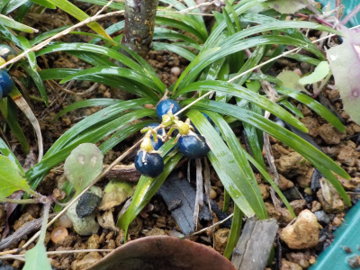
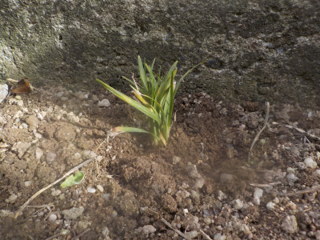
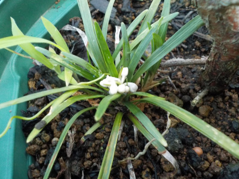
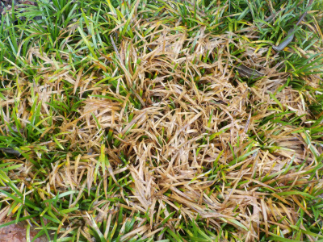
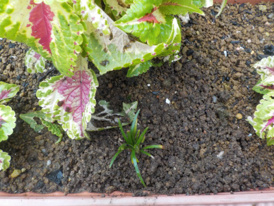
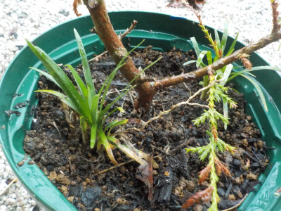

植木鉢にリュウノヒゲの実がありました。
2022/12/10

今年は花が咲いたので、実も出来ました。
実を見ると種子をまきたいと思うのですが、これはどうかな？
株分けで十分に増やせるので必要ないかな。
2022/12/10

今年は花が咲いたので、実も出来ました。
実を見ると種子をまきたいと思うのですが、これはどうかな？
株分けで十分に増やせるので必要ないかな。
2022/07/31

リュウノヒゲは日陰でも育つって記事をネットで見ました。
家の裏で雑草が生えてる場所があるんですが、そこにリュウノヒゲを植えてみることにしました。
リュウノヒゲが増えて雑草が減るといいんですが、そううまくは行かないんだろうな。
2022/07/02

白くて小さい花が咲いてました。
何でも花が咲くといいですね。
2021/08/13

夏の水不足で茶色くしてしまいました。
どうにか復活させて、今まで以上に繁茂させたいと思いました。

プランターに植えてあるコリウスの下に植えました。プランターは水やりするので、たぶんすくすく育つんじゃないかと思います。

植木鉢にも寄せ植えしました。
今後いろんな場所に植えていくつもりです。
グランドカバーとして使えるらしいです。日陰でも育つので、木の下に植えてもいいそうです。
実際に植えたらどうなるでしょうね。色々やってみようと思います。